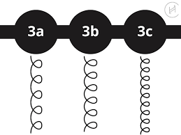

There is a widely recognized hair typing system that helps people understand their natural hair texture, especially when it comes to curls. This system categorizes hair into four main types, ranging from Type 1 to Type 4, with each category further divided into subcategories labeled A, B, and C. The system was popularized by hairstylist Andre Walker and has since become a helpful tool for people trying to identify the best care, styling techniques, and products for their specific hair type.
Type 1 hair is completely straight and lacks any natural curl. It’s often the shiniest of all hair types because the natural oils from the scalp can easily travel down the hair shaft.
1A – This hair type is very fine, soft, and flat. It tends to be oily and difficult to curl or style due to its ultra-smooth texture.
1B – Slightly thicker and more voluminous than 1A, with a bit more texture. It may have a slight wave but is still mostly straight.
1C – Coarse and thick with a bit of body and some visible bends or waves, especially in humid conditions. It holds styles slightly better than 1A and 1B.
Type 1 hair is completely straight and lacks any natural curl. It’s often the shiniest of all hair types because the natural oils from the scalp can easily travel down the hair shaft.
2A – This hair type is very fine, soft, and flat. It tends to be oily and difficult to curl or style due to its ultra-smooth texture.
2B – Slightly thicker and more voluminous than 1A, with a bit more texture. It may have a slight wave but is still mostly straight.
3C – Coarse and thick with a bit of body and some visible bends or waves, especially in humid conditions. It holds styles slightly better than 1A and 1B.
Type 3 hair forms clearly defined curls that spring back when stretched. This hair type is prone to dryness because the natural oils from the scalp have a harder time traveling down the curl pattern.
3A – Large, loose curls with a shiny, springy texture. These curls have a wider circumference, similar to a sidewalk chalk.
3B – Medium-sized curls that are more voluminous and may resemble ringlets. This hair type can be coarse and dense with a tendency to frizz.
3C – Tight, corkscrew curls that are densely packed together. These curls are smaller in diameter and give the hair a lot of volume and texture.
Type 4 hair features very tight curls or coils. It is the most fragile hair type due to its tight curl pattern, which makes it more susceptible to breakage and shrinkage.
4A – Soft coils with a defined "S" pattern. The curls are springy and retain moisture better than 4B or 4C, though they still require careful hydration.
4B – This hair bends in sharp angles like a "Z" shape. It has less curl definition and more of a fluffy appearance. It is very prone to shrinkage and dryness.
4C – The tightest curl pattern with almost no defined curl. It is very dense, fragile, and experiences the most shrinkage (sometimes up to 75% of its actual length). 4C hair requires a lot of moisture and gentle handling.